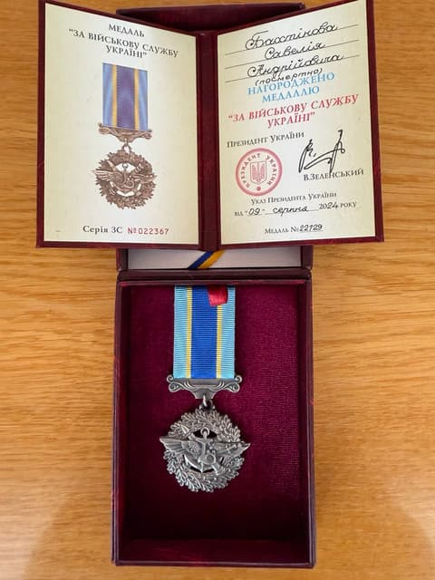

Бахтiнoв Cавелій
Спортсмен кіокушинкай каратею
Народився 1999 року у м. Буськ.
Закінчив львівський державний університет внутрішніх справ
Спогад про героя
Савелій Бахтінов родом зі старовинного міста Буськ, розташованому за 50 кілометрів на північний схід від Львова. Навчався у Буській міській гімназії.
Активно займався спортом, був призером обласних змагань з кіокушинкай карате. Савелій займався недовгий час кіокушинкай карате але дійшов до 7-го кю. Проте, навіть закінчивши свої заняття кіокушинкай карате, Савелій завжди привітно вітався із своїм тренером коли зустрічали один одного у місті.
Загинув Воїн 3-го червня 2022 року неподалік міста Авдіївка, Донецької області.